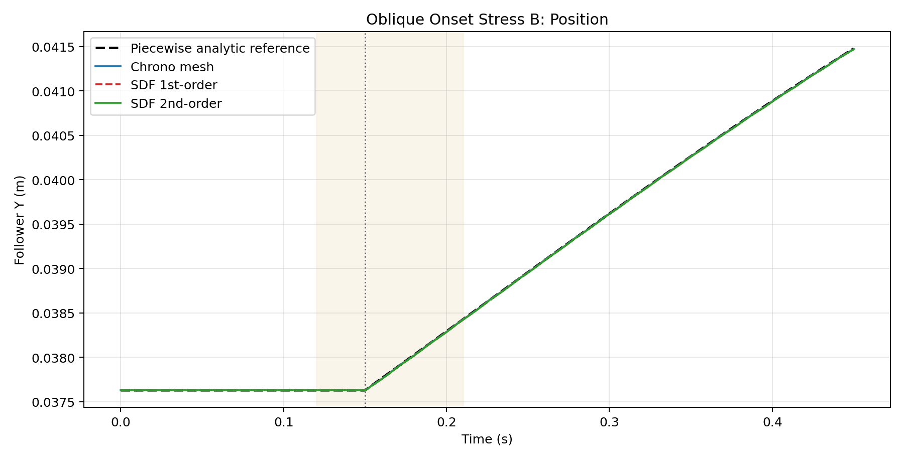
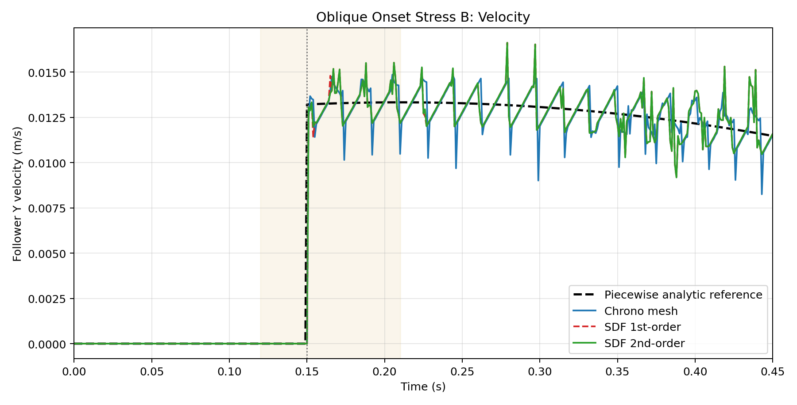

This variant offsets the roller laterally before first contact so that the onset is established on the cam flank rather than on the symmetry axis. The goal is to create a clean benchmark in which onset gate and local-fit logic operate under coupled normal approach and tangential slip, while preserving the same smooth geometry and weak follower preload used in the vertical Version B benchmark.
Cam radius: 0.030 m
Eccentricity: 0.006 m
Roller radius: 0.010 m
Follower X offset: 0.012 m
Anchor X: 0.012 m
Rest length: 0.037628 m
Stiffness: 670.0 N/m
Damping: 47.0 Ns/m
Nonzero local-fit lines: 3
Max attempted: 4
Max applied: 4
Max rejected positive-gap: 0
First nonzero debug line: [SDF] Step 3870 active contacts: 1 queried=12000 after_cap=1 fit_attempted=4 fit_applied=4 fit_reject=0
| Method | Runtime (s) | Pos RMSE (m) | Vel RMSE (m/s) | Late Vel RMSE (m/s) | Vel Max Abs (m/s) | Detected motion onset (s) |
|---|---|---|---|---|---|---|
| Chrono NSC native mesh | 85.683 | 0.000003 | 0.001044 | 0.001033 | 0.013218 | 0.151 |
| SDF 1st-order | 108.887 | 0.000005 | 0.001027 | 0.001010 | 0.013218 | 0.151 |
| SDF 2nd-order | 109.269 | 0.000005 | 0.001022 | 0.001009 | 0.013218 | 0.151 |

